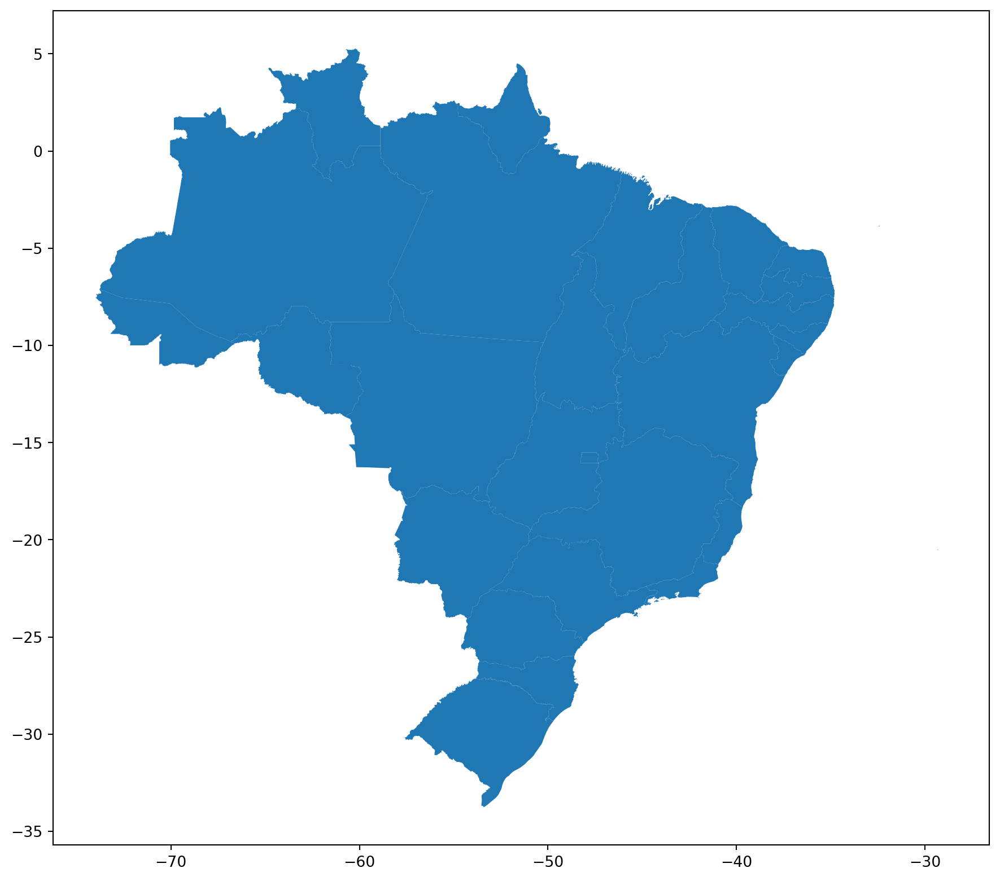

GeoPandas fornece uma interface de alto nível para a biblioteca matplotlib para fazer mapas. Mapear formas é tão fácil quanto usar o método plot() em GeoSeries ou GeoDataFrame.
# importar o geopandasimport geopandas as gpd# importações auxiliaresfrom IPython.display import display, Markdownuf = gpd.read_file('./arquivos/uf.shp')display(Markdown('## O método `plot` exibe o desenho do GeoDataFrame'))uf.plot()
4.1 O método plot exibe o desenho do GeoDataFrame
<Axes: >

4.2 Alterando a figura
Usando-se o matplotlib podemos configurar outros parâmetros da impressão do mapa.
4.2.1 Tamanho
figsize() - podemos alterar a largura e a altura da figura passando os valores que são em polegadas. Exemplo: figsize=(7x5), ou transformar para mm dividindo por 25,4.
from matplotlib import pyplot as plt# Criando objetos da figura e do axesfig, ax = plt.subplots(figsize=(5, 2))cm =1/2.54# centimeters in inchesfig, ax = plt.subplots(figsize=(5*cm, 2*cm))